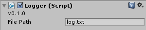

FileLogger Feature Overview
FileLogger is a logging tool for Unity.
Log to a file
Set output file name or use default log.txt and all your logged messages will be saved to hard drive.

Log in Real Time
Watch messages as they appear in real time. It's best to use with second monitor.

Works also in Unity Console window.

Log in edit and in play mode
FileLogger works both in edit and in play mode. In edit mode you can start/stop logging with a handly FileLogger window. In play mode you can make logger enable on start or manually, when you need it.
Place message into context
You can display additional data related to the log message, like class the log method was called from, and one class before that.

Logging methods specific to your needs
There're three different log methods to use. LogCall() allows you to easily track the execution path, LogString() outputs user defined text and LogResult() allows to quick log value returned by a method.
Filter what to log
If you have many calls to log methods spread all across your project, instead of deleting them, just disable those you don't need.
You can also only specify classes or methods that should have logging enabled.

Message nesting
Logged messages can be nested to reflect their position in the call tree.

Display objects GUID
Each message can have attached an object GUID of the object that called the log method.
If you have two calls with identical GUID, you can be sure that they were called from the same object. It's very usefull if you have in the scene more than one instance of the same object.

Configure what to display in log messages
You can disable information that you don't need in order to have cleaner view on the logged data.

Open log file in external log viewer
Use an external log viewer, like the free LogExpert, to search, filter and highlight data the way you want.

Separate window for easy access
You can open a separate FileLogger window to quickly enable/disable logging regardless of what game object is currently displayed in the inspector.